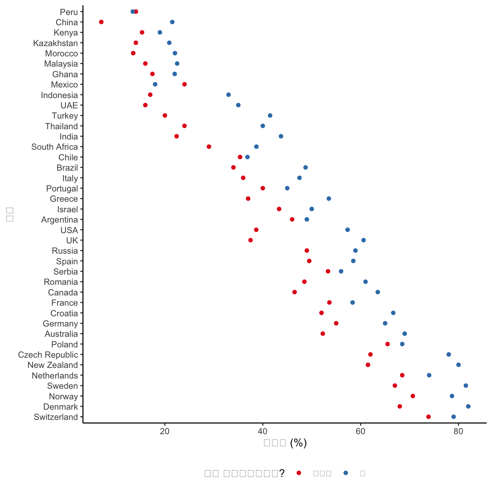
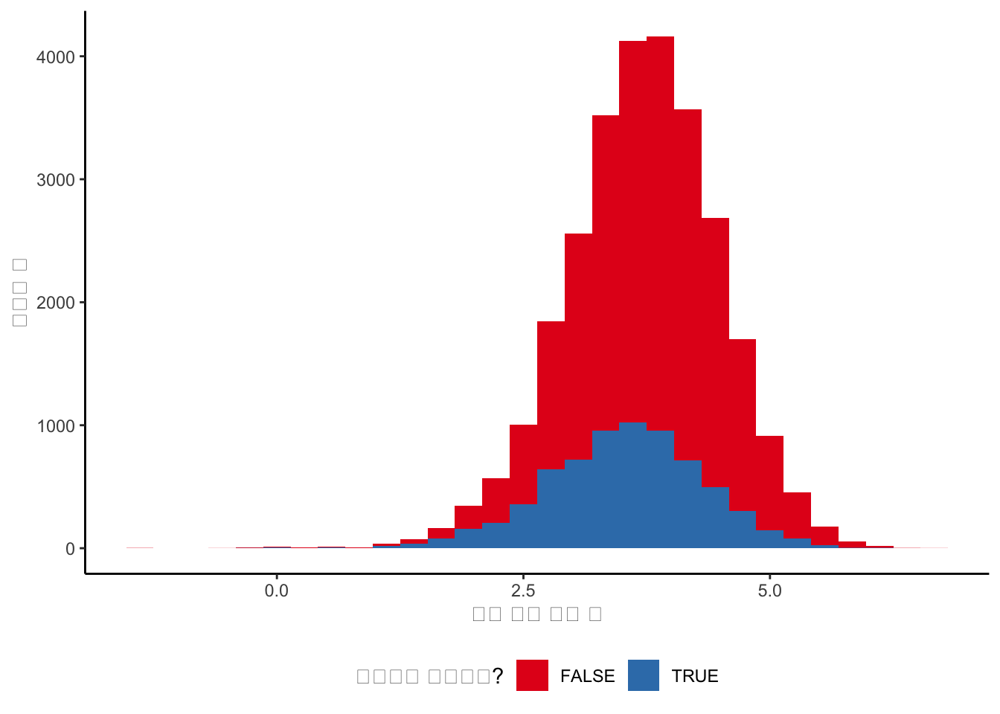

library(haven)
# library(labelled)
library(tidyverse)
library(tinytable)8 실험 및 설문 조사
Chapman and Hall/CRC에서 2023년 7월에 이 책을 출판했습니다. 여기에서 구매할 수 있습니다. 이 온라인 버전은 인쇄된 내용에서 일부 업데이트되었습니다.
선수 지식
- 실제 영향 평가, (Gertler 기타 2016)
- 인과 추론 및 무작위화에 대한 광범위한 논의를 제공하는 3장과 4장에 집중하세요.
- 설문 응답 심리학, (Tourangeau, Rips, 와/과 Rasinski 2000)
- 설문 질문의 문구에 대해 논의하는 2장 “응답자의 설문 질문 이해”에 집중하세요.
- 설문 조사 실행 방법, (Stantcheva 2023)
- 이 논문은 설문 조사를 구성할 때의 실제적인 문제에 대한 개요를 제공합니다.
- Q&A: Pew Research Center가 인도에서 거의 30,000명을 설문 조사한 방법, (Letterman 2021)
- 종교적 신념에 대한 대규모 설문 조사 중에 발생한 많은 실제적인 문제를 논의합니다.
- 통계 및 인과 추론, (Holland 1986)
- 통계 모델, 특히 루빈의 모델을 사용하여 원인의 효과를 이해하는 방법을 논의하는 1-3부에 집중하세요.
- 빅 테크는 당신을 테스트하고 있습니다, (Fry 2020)
- 이 기사는 기술 기업에서 A/B 테스트 사용에 대해 논의합니다.
- 산업에서의 인과 추론 과제: LinkedIn 경험에서 얻은 관점, (Xu 2020)
- A/B 테스트에 대한 개요를 제공하는 이 비디오의 전반부에 집중하세요.
핵심 개념 및 기술
- 무작위화는 처리 및 대조군을 설정하는 데 사용됩니다. 아이디어는 처리 외에는 이 그룹들이 동일하다는 것입니다. 이를 통해 처리의 평균 효과를 측정할 수 있습니다. 그러나 해당 추정치의 타당성에 대한 많은 위협이 있습니다.
- 추정치를 얻으면 그것들이 어느 정도 적용되는지 알고 싶습니다. 실험의 맥락에만 적용된다면 내부 타당성을 가집니다. 그 맥락 밖으로 일반화된다면 외부 타당성을 가집니다.
- 정보에 입각한 동의와 실험의 필요성을 확립하는 것이 왜 중요한지 이해하는 것.
- A/B 테스트 및 그 미묘한 차이.
- 설문 조사 설계 및 구현.
소프트웨어 및 패키지
- Base R (R Core Team 2024)
haven(Wickham, Miller, 와/과 Smith 2023)labelled(Larmarange 2023)tidyverse(Wickham 기타 2019)tinytable(Arel-Bundock 2024)
8.1 서론
이 장은 실험과 설문 조사를 통해 데이터를 얻는 것에 관한 것입니다. 실험은 우리가 관심 있는 것을 명시적으로 제어하고 변경할 수 있는 상황입니다. 이것의 장점은 효과를 식별하고 추정하는 것이 명확해야 한다는 것입니다. 우리가 관심 있는 것에 노출되는 처리군과 그렇지 않은 대조군이 있습니다. 이들은 처리 전에 무작위로 분할됩니다. 따라서 만약 그들이 다르게 끝난다면, 그것은 처리 때문이어야 합니다. 불행히도, 삶은 거의 그렇게 순조롭지 않습니다. 처리군과 대조군이 얼마나 유사했는지에 대한 논쟁은 무기한으로 계속되는 경향이 있습니다. 그리고 효과를 추정하기 전에, 우리가 관심 있는 것이 무엇이든 측정할 수 있어야 하는데, 이는 종종 놀랍도록 어렵습니다.
동기 부여를 위해, 2014년에 샌프란시스코로 이사한 사람의 상황을 생각해 보십시오. 그들이 이사하자마자 자이언츠는 월드 시리즈에서 우승했고 골든스테이트 워리어스는 역사적인 월드 챔피언십 연속 기록을 시작했습니다. 그런 다음 그들은 시카고로 이사했고, 즉시 컵스는 100년 만에 처음으로 월드 시리즈에서 우승했습니다. 그런 다음 그들은 매사추세츠로 이사했고, 패트리어츠는 슈퍼볼에서 다시, 다시, 다시 우승했습니다. 그리고 마지막으로, 그들은 토론토로 이사했고, 랩터스는 즉시 월드 챔피언십에서 우승했습니다. 도시는 그들에게 이사 비용을 지불해야 할까요, 아니면 시 예산을 다른 곳에 더 잘 쓸 수 있을까요?
답을 얻는 한 가지 방법은 실험을 실행하는 것입니다. 주요 스포츠 팀이 있는 북미 도시 목록을 만드십시오. 그런 다음 주사위를 굴려 1년 동안 그곳에 살게 하고 스포츠 팀의 결과를 측정하십시오. 충분한 수명이 있다면 우리는 그것을 알아낼 수 있을 것입니다. 이것은 우리가 도시에서 살 수도 없고 도시에서 살지 않을 수도 없기 때문에 오랜 시간이 걸릴 것입니다. 이것이 인과 추론의 근본적인 문제입니다. 즉, 한 사람은 처리될 수도 없고 처리되지 않을 수도 없습니다. 실험과 무작위 대조 시험은 우리가 어떤 처리를 무작위로 할당하여 다른 모든 것이 동일하다(또는 적어도 무시할 수 있다)는 믿음을 가지려고 노력하는 상황입니다. 우리는 Neyman-Rubin 잠재적 결과 프레임워크를 사용하여 상황을 공식화합니다(Holland 1986).
처리 \(t\)는 종종 이진 변수일 것입니다. 즉, 0 또는 1입니다. 사람이 \(i\)가 처리되지 않으면 0이고, 이는 그들이 대조군에 있다는 것을 의미하며, 처리되면 1입니다. 우리는 일반적으로 그 사람에 대한 관심 있는 어떤 결과 \(Y_i\)를 가질 것입니다. 이는 이진, 범주형, 다항, 순서형, 연속형 또는 다른 유형의 변수일 수 있습니다. 예를 들어, 투표 선택일 수 있으며, 이 경우 그 사람이 “보수” 또는 “비보수”인지, 어떤 정당을 지지하는지(예: “보수”, “자유”, “민주”, “녹색”), 또는 특정 지도자를 지지할 확률을 측정할 수 있습니다.
처리의 효과는 \((Y_i|t=0) \neq (Y_i|t=1)\)인 경우 인과적입니다. 즉, 처리되지 않았을 때의 사람 \(i\)의 결과가 처리되었을 때의 결과와 다르다는 것입니다. 만약 우리가 한 번에 한 개인을 처리하고 통제할 수 있다면, 우리는 결과의 변화를 일으킨 것이 처리뿐이라는 것을 알 수 있을 것입니다. 그것을 설명할 다른 요인은 없을 것입니다. 그러나 인과 추론의 근본적인 문제는 여전히 남아 있습니다. 즉, 우리는 한 번에 한 개인을 처리하고 통제할 수 없습니다. 따라서 처리의 효과를 알고 싶을 때, 우리는 반사실과 비교해야 합니다. sec-on-writing에서 소개된 반사실은 처리된 개인이 처리되지 않았다면 일어났을 일입니다. 결과적으로, 인과 추론을 결측 데이터 문제로 생각하는 한 가지 방법은 우리가 반사실을 결측하고 있다는 것입니다.
우리는 한 개인에서 처리와 통제를 비교할 수 없습니다. 따라서 우리는 대신 두 그룹의 평균을 비교합니다. 즉, 처리된 그룹과 처리되지 않은 그룹입니다. 우리는 개별 수준에서 불가능하기 때문에 그룹 수준에서 반사실을 추정하려고 합니다. 이러한 절충안을 통해 우리는 앞으로 나아갈 수 있지만, 확실성을 희생해야 합니다. 우리는 대신 무작위화, 확률 및 기대에 의존해야 합니다.
우리는 일반적으로 효과가 없다는 기본 가정을 고려하고, 우리의 생각을 바꾸게 할 증거를 찾습니다. 우리는 그룹에서 일어나는 일에 관심이 있으므로, 우리 자신을 표현하기 위해 기대와 확률 개념으로 전환합니다. 따라서 우리는 평균적으로 적용되는 주장을 할 것입니다. 재미있는 양말을 신는 것이 정말로 행운의 날을 만들 수도 있지만, 그룹 전체의 평균으로는 그렇지 않을 것입니다. 평균 효과에만 관심이 있을 필요는 없다는 점을 지적할 가치가 있습니다. 중앙값, 분산 또는 무엇이든 고려할 수 있습니다. 그럼에도 불구하고, 평균 효과에 관심이 있다면 진행하는 한 가지 방법은 다음과 같습니다.
- 데이터셋을 두 개로 나눕니다. 즉, 처리된 것과 처리되지 않은 것, 그리고 이진 효과 변수(행운의 날 또는 아님)를 가집니다.
- 변수를 합산한 다음 변수의 길이로 나눕니다.
- 두 그룹 간의 이 값을 비교합니다.
이것은 sec-on-writing에서 소개된 추정량으로, 관심 있는 것을 추측하는 방법입니다. 추정 대상은 관심 있는 것이며, 이 경우 평균 효과이고, 추정치는 우리의 추측이 무엇이든 간에 나타나는 것입니다. 상황을 설명하기 위해 데이터를 시뮬레이션할 수 있습니다.
set.seed(853)
treat_control <-
tibble(
group = sample(x = c("Treatment", "Control"), size = 100, replace = TRUE),
binary_effect = sample(x = c(0, 1), size = 100, replace = TRUE)
)
treat_control# A tibble: 100 × 2
group binary_effect
<chr> <dbl>
1 Treatment 0
2 Control 1
3 Control 1
4 Treatment 1
5 Treatment 1
6 Treatment 0
7 Treatment 1
8 Treatment 1
9 Control 0
10 Control 0
# ℹ 90 more rowstreat_control |>
summarise(
treat_result = sum(binary_effect) / length(binary_effect),
.by = group
)# A tibble: 2 × 2
group treat_result
<chr> <dbl>
1 Treatment 0.552
2 Control 0.333이 경우, 우리는 처리군과 대조군 각각에 대해 0 또는 1을 100번 추출하며, 처리된 것의 평균 효과 추정치는 0.22입니다.
더 넓게 보면, 인과적 이야기를 하기 위해서는 이론과 우리가 관심 있는 것에 대한 상세한 지식을 결합해야 합니다(Cunningham 2021, p. 4). sec-gather-data에서는 우리가 세상에 대해 관찰한 데이터를 수집하는 것에 대해 논의했습니다. 이 장에서는 세상을 우리가 필요한 데이터로 바꾸는 것에 대해 더 적극적으로 다룰 것입니다. 연구자로서 우리는 무엇을 측정하고 어떻게 측정할지 결정해야 하며, 우리가 관심 있는 것이 무엇인지 정의해야 합니다. 우리는 데이터 생성 과정에 적극적으로 참여할 것입니다. 즉, 이 데이터를 사용하고 싶다면 연구자로서 나가서 그것을 찾아야 합니다.
이 장에서는 실험, 특히 처리 및 대조군 구성, 그리고 그 결과의 적절한 고려를 다룹니다. 설문 조사 구현을 살펴봅니다. 터스키기 매독 연구와 체외막 산소 공급(ECMO) 실험을 참조하여 실험에서의 윤리적 행동의 몇 가지 측면을 논의하고 다양한 사례 연구를 살펴봅니다. 마지막으로, 산업에서 광범위하게 사용되는 A/B 테스트로 전환하고 Upworthy 데이터를 기반으로 한 사례 연구를 고려합니다.
20세기 통계학자 로널드 피셔와 19세기 통계학자 프랜시스 골턴은 이 장에서 다루는 많은 작업의 지적 할아버지입니다. 어떤 경우에는 직접 그들의 작업이고, 다른 경우에는 그들의 기여를 기반으로 구축된 작업입니다. 두 사람 모두 우생학을 믿었으며, 일반적으로 비난받을 만한 다른 것들도 믿었습니다. 예술사가 예를 들어 카라바조를 살인자로 인정하면서도 그의 작품과 영향력을 고려하는 것과 마찬가지로, 통계학과 데이터 과학도 더 나은 미래를 건설하려고 노력하면서 이 과거에 대해 더 일반적으로 관심을 가져야 합니다.
8.2 현장 실험 및 무작위 대조 시험
8.2.1 무작위화
어떤 상황에서는 상관 관계만으로도 충분할 수 있지만(Hill 1965), 상황이 변하고 환경이 약간 다를 때 예측을 할 수 있으려면 인과 관계를 이해하려고 노력해야 합니다. 경제학은 2000년대에 신뢰성 혁명을 겪었습니다(Angrist 와/과 Pischke 2010). 경제학자들은 이전 작업이 가능한 만큼 신뢰할 수 없다는 것을 깨달았습니다. 연구 설계 및 실험 사용에 대한 관심이 증가했습니다. 이는 정치학과 같은 다른 사회 과학에서도 비슷한 시기에 일어났습니다(Druckman 와/과 Green 2021).
핵심은 반사실입니다. 즉, 처리가 없었다면 일어났을 일입니다. 이상적으로는 다른 모든 것을 일정하게 유지하고, 세상을 무작위로 두 그룹으로 나눈 다음, 한 그룹은 처리하고 다른 그룹은 처리하지 않을 수 있습니다. 그러면 두 그룹 간의 차이가 처리 때문이라는 것을 확신할 수 있습니다. 그 이유는 우리가 어떤 모집단을 가지고 있고 거기서 무작위로 두 그룹을 선택한다면, 그 두 그룹(둘 다 충분히 크다면)은 모집단과 동일한 특성을 가져야 하기 때문입니다. 무작위 대조 시험(RCT)과 A/B 테스트는 우리가 바랄 수 있는 “골드 스탠다드”에 가장 가깝게 다가가려고 시도합니다.
우리와 (athey2017state와?) 같은 다른 사람들이 이러한 접근 방식을 언급할 때 사용하는 긍정적인 언어는 그것들이 완벽하다는 것을 의미하지 않습니다. 단지 다른 대부분의 옵션보다 더 나을 수 있다는 것을 의미합니다. 예를 들어, sec-causality-from-observational-data에서는 관찰 데이터에서 인과 관계를 고려할 것입니다. 그리고 이것이 때때로 우리가 할 수 있는 전부이지만, 둘 다 평가할 수 있는 상황은 관찰 데이터 기반 접근 방식이 일반적으로 차선책이라는 것을 분명히 합니다(Gordon 기타 2019; Gordon, Moakler, 와/과 Zettelmeyer 2022). RCT와 A/B 테스트는 또한 특정 질문에 초점을 맞추고 효과가 발생하는 메커니즘을 밝히려고 노력하는 연구를 설계할 기회와 같은 다른 이점을 가져옵니다(Alsan 와/과 Finkelstein 2021). 그러나 그것들은 완벽하지 않으며, RCT의 수용이 만장일치는 아니었습니다(Deaton 2010).
실험 관행의 기본 중 하나는 맹검이라는 것입니다. 즉, 참가자는 자신이 처리군에 있는지 대조군에 있는지 모릅니다. 특히 주관적인 결과의 경우 맹검 실패는 일부 분야에서 전체 실험을 기각하는 근거가 됩니다(Edwards 2017). 이상적으로는 실험은 이중 맹검이어야 합니다. 즉, 연구자조차도 모릅니다. (stolberg2006inventing은?) 1835년 동종 요법 약물의 효과를 평가하기 위한 무작위 이중 맹검 시험의 초기 예를 논의합니다. 여기서 참가자도 주최자도 누가 어떤 그룹에 속하는지 몰랐습니다. 이것은 RCT와 A/B 테스트에서는 거의 그렇지 않습니다. 다시 말하지만, 이것이 유용하지 않다는 것을 의미하는 것은 아닙니다. 결국 1847년 Semmelweis는 맹검 연구 없이도 인턴이 아기를 분만하기 전에 손을 씻는 것의 이점을 확인했습니다(Morange 2016, p. 121). 또 다른 주요 관심사는 RCT에서 발견된 결과가 해당 설정 외부로 얼마나 일반화되는지입니다. 일반적으로 장기간에 걸쳐 수행되는 RCT는 거의 없지만, 이것이 변하고 있을 가능성이 있으며 (Bouguen2019는?) 장기적인 효과를 평가하기 위해 추적할 수 있는 일부 RCT를 제공합니다. 마지막으로, 인과 관계에 대한 초점은 사회 과학에서 비용이 들지 않은 것은 아닙니다. 일부는 인과 관계 중심 접근 방식이 다른 유형의 질문을 희생하면서 답할 수 있는 질문 유형에 관심을 집중시킨다고 주장합니다.
8.2.2 시뮬레이션 예시: 고양이 또는 개
우리는 처리 외에는 동일한 처리군과 대조군을 설정할 수 있기를 바랍니다. 이는 대조군을 만드는 것이 중요합니다. 왜냐하면 그렇게 할 때 우리는 반사실을 설정하기 때문입니다. 우리는 예를 들어, 전후 비교의 한 가지 문제인 기본 추세나, 처리군에 대한 자기 선택이 발생할 수 있는 선택 편향에 대해 걱정할 수 있습니다. 이러한 문제 중 어느 하나라도 편향된 추정치를 초래할 수 있습니다. 우리는 무작위화를 사용하여 이러한 문제를 어느 정도 해결합니다.
시작하려면 모집단을 시뮬레이션한 다음 거기서 무작위로 표본을 추출합니다. 우리는 인구의 절반은 파란색을 좋아하고 다른 절반은 흰색을 좋아하도록 설정할 것입니다. 그리고 더 나아가, 파란색을 좋아하는 사람은 거의 확실히 개를 선호하고, 흰색을 좋아하는 사람은 거의 확실히 고양이를 선호하도록 설정할 것입니다. 시뮬레이션은 이 책에서 옹호하는 워크플로의 중요한 부분입니다. 이는 시뮬레이션된 데이터 분석에서 결과가 무엇이어야 하는지 알기 때문입니다. 반면에 실제 데이터를 바로 분석하면 예상치 못한 결과가 우리의 분석 오류 때문인지 실제 결과 때문인지 알 수 없습니다. 이 시뮬레이션 접근 방식이 유용한 또 다른 좋은 이유는 팀으로 작업할 때 데이터 수집 및 정리가 완료되기 전에 분석을 시작할 수 있다는 것입니다. 시뮬레이션은 또한 수집 및 정리 팀이 데이터에 대해 실행해야 할 테스트에 대해 생각하는 데 도움이 될 것입니다.
set.seed(853)
num_people <- 5000
population <- tibble(
person = 1:num_people,
favorite_color = sample(c("Blue", "White"), size = num_people, replace = TRUE),
prefers_dogs = if_else(favorite_color == "Blue",
rbinom(num_people, 1, 0.9),
rbinom(num_people, 1, 0.1))
)
population |>
count(favorite_color, prefers_dogs)# A tibble: 4 × 3
favorite_color prefers_dogs n
<chr> <int> <int>
1 Blue 0 256
2 Blue 1 2291
3 White 0 2239
4 White 1 214sec-farm-data에서 소개된 용어와 개념을 바탕으로, 이제 목표 모집단의 약 80%를 포함하는 표집 틀을 구성합니다.
set.seed(853)
frame <-
population |>
mutate(in_frame = rbinom(n = num_people, 1, prob = 0.8)) |>
filter(in_frame == 1)
frame |>
count(favorite_color, prefers_dogs)# A tibble: 4 × 3
favorite_color prefers_dogs n
<chr> <int> <int>
1 Blue 0 201
2 Blue 1 1822
3 White 0 1803
4 White 1 177지금은 개 또는 고양이 선호도를 제쳐두고, 좋아하는 색상만으로 처리군과 대조군을 만드는 데 집중할 것입니다.
set.seed(853)
sample <-
frame |>
select(-prefers_dogs) |>
mutate(
group =
sample(x = c("Treatment", "Control"), size = nrow(frame), replace = TRUE
))두 그룹의 평균을 보면, 파란색 또는 흰색을 선호하는 비율이 우리가 지정한 것과 매우 유사하다는 것을 알 수 있습니다(표 tbl-dogsdtocats).
sample |>
count(group, favorite_color) |>
mutate(prop = n / sum(n),
.by = group) |>
tt() |>
style_tt(j = 1:4, align = "llrr") |>
format_tt(digits = 2, num_mark_big = ",", num_fmt = "decimal") |>
setNames(c("그룹", "선호", "수", "비율"))| 그룹 | 선호 | 수 | 비율 |
|---|---|---|---|
| Control | Blue | 987 | 0.5 |
| Control | White | 997 | 0.5 |
| Treatment | Blue | 1,036 | 0.51 |
| Treatment | White | 983 | 0.49 |
우리는 좋아하는 색상만으로 무작위화했습니다. 그러나 우리는 동시에 개 또는 고양이 선호도를 가져왔고, 개를 고양이보다 선호하는 사람들의 “대표적인” 비율을 가질 것이라는 것을 발견해야 합니다. 데이터셋을 살펴볼 수 있습니다(표 tbl-dogstocats).
sample |>
left_join(
frame |> select(person, prefers_dogs),
by = "person"
) |>
count(group, prefers_dogs) |>
mutate(prop = n / sum(n),
.by = group) |>
tt() |>
style_tt(j = 1:4, align = "llrr") |>
format_tt(digits = 2, num_mark_big = ",", num_fmt = "decimal") |>
setNames(c(
"그룹",
"개를 고양이보다 선호",
"수",
"비율"
))| 그룹 | 개를 고양이보다 선호 | 수 | 비율 |
|---|---|---|---|
| Control | 0 | 1,002 | 0.51 |
| Control | 1 | 982 | 0.49 |
| Treatment | 0 | 1,002 | 0.5 |
| Treatment | 1 | 1,017 | 0.5 |
“관찰 불가능한” 것에 대한 대표적인 비율을 갖는 것은 흥미로운 일입니다. (이 경우, 우리는 그것들을 “관찰”하지만, 요점을 설명하기 위해 그것들을 선택하지는 않았습니다.) 우리는 변수들이 상관 관계를 가졌기 때문에 이것을 얻습니다. 그러나 우리가 논의할 여러 가지 방식으로 무너질 것입니다. 또한 충분히 큰 그룹을 가정합니다. 예를 들어, 개를 하나의 개체로 간주하는 대신 특정 개 품종을 고려한다면, 우리는 이러한 상황에 처하지 않을 수도 있습니다. 두 그룹이 동일한지 확인하려면 관찰 가능한 것, 이론, 경험 및 전문가 의견을 기반으로 두 그룹 간의 차이를 식별할 수 있는지 확인해야 합니다. 이 경우 우리는 평균을 살펴보았지만, 다른 측면도 살펴볼 수 있습니다.
이것은 전통적으로 분산 분석(ANOVA)으로 이어질 것입니다. ANOVA는 약 100년 전 피셔가 농업 통계 문제에 대해 작업하면서 도입했습니다. ((Stolley1991은?) 피셔에 대한 추가 배경을 제공합니다.) 이는 역사적으로 농업 연구가 통계 혁신과 밀접하게 관련되어 있었기 때문에 예상보다 덜 놀라운 일입니다. 종종 통계 방법은 “비료가 효과가 있는가?”와 같은 농업 질문에 답하기 위해 설계되었으며, 나중에 임상 시험에 적용되었습니다(Yoshioka 1998). 밭을 “처리된” 것과 “처리되지 않은” 것으로 나누는 것은 비교적 쉬웠고, 어떤 효과의 크기도 클 가능성이 있었습니다. 해당 맥락에 적합하지만, 종종 이러한 동일한 통계 접근 방식은 오늘날에도 입문 자료에서 여전히 가르쳐지고 있으며, 심지어 설계된 것과 다른 상황에 적용될 때도 마찬가지입니다. 무엇이 수행되고 있는지, 그리고 상황에 적절한지 여부를 한 발짝 물러서서 생각하는 것이 거의 항상 이득입니다. 우리는 ANOVA가 역사적으로 중요하기 때문에 여기에서 언급합니다. 올바른 설정에서는 아무런 문제가 없습니다. 그러나 그것이 최선의 옵션인 현대적인 사용 사례의 수는 적은 경향이 있습니다. ANOVA의 기반이 되는 모델을 직접 구축하는 것이 더 나을 수 있으며, 이는 sec-its-just-a-linear-model에서 다룹니다.
8.2.3 처리 및 통제
처리군과 대조군이 모든 면에서 동일하고, 처리 외에는 그렇게 유지된다면, 우리는 내부 타당성을 가집니다. 즉, 우리의 통제는 반사실로 작동할 것이고, 우리의 결과는 해당 연구의 그룹 간의 차이를 말할 수 있습니다. 내부 타당성은 처리 효과에 대한 우리의 추정치가 처리와 관련이 있고 다른 측면과 관련이 없다는 것을 의미합니다. 이는 우리가 실험에서 일어난 일에 대해 주장하기 위해 우리의 결과를 사용할 수 있다는 것을 의미합니다.
우리가 무작위화를 적용한 그룹이 더 넓은 모집단을 대표하고, 실험 설정이 외부 조건과 같았다면, 우리는 추가로 외부 타당성을 가질 수 있습니다. 이는 우리가 발견한 차이가 우리 자신의 실험에만 적용되는 것이 아니라 더 넓은 모집단에도 적용된다는 것을 의미합니다. 외부 타당성은 우리가 실험을 사용하여 실험 외부에서 일어날 일에 대해 주장할 수 있다는 것을 의미합니다. 이것을 가능하게 한 것은 무작위화입니다. 실제로 우리는 하나의 실험에만 의존하지 않고, 더 넓은 증거 수집 노력에 대한 기여로 간주할 것입니다(Duflo 2020.1955).
거인의 어깨 위에 서서
에스더 뒤플로 박사는 MIT의 빈곤 완화 및 개발 경제학 압둘 라티프 자밀 교수입니다. 1999년 MIT에서 경제학 박사 학위를 받은 후, 그녀는 MIT에 조교수로 남아 있었고, 2003년에 정교수로 승진했습니다. 그녀의 연구 분야 중 하나는 빈곤을 해결하는 방법을 이해하기 위해 무작위 대조 시험을 사용하는 경제 개발입니다. 그녀의 가장 중요한 책 중 하나는 Poor Economics(Banerjee 와/과 Duflo 2011)입니다. 그녀의 가장 중요한 논문 중 하나는 (banerjee2015miracle로?), 무작위화를 사용하여 소액 금융의 효과를 조사합니다. 그녀는 2019년에 알프레드 노벨을 기념하는 스베리예스 릭스방크 경제학상을 수상했습니다.
그러나 이것은 우리가 무작위화를 두 번 해야 한다는 것을 의미합니다. 첫째, 실험 대상 그룹으로, 둘째, 처리와 통제 사이입니다. 이 무작위화에 대해 어떻게 생각하고, 그것이 어느 정도 중요합니까?
우리는 처리되는 것의 효과에 관심이 있습니다. 우리가 다른 가격을 청구할 수 있으며, 이는 연속 처리 변수가 될 수 있습니다. 또는 웹사이트에서 다른 색상을 비교할 수 있으며, 이는 이산 처리 변수가 될 수 있습니다. 어느 쪽이든, 그룹이 처리 외에는 동일한지 확인해야 합니다. 어떻게 이것을 확신할 수 있을까요? 한 가지 방법은 처리 변수를 무시하고 다른 모든 변수를 조사하여 다른 변수를 기반으로 그룹 간의 차이를 감지할 수 있는지 확인하는 것입니다. 예를 들어, 웹사이트에서 실험을 수행하는 경우 그룹이 대략 다음과 같은 측면에서 유사한지 확인합니다.
- Microsoft 및 Apple 사용자?
- Safari, Chrome 및 Firefox 사용자?
- 모바일 및 데스크톱 사용자?
- 특정 위치의 사용자?
또한, 그룹이 더 넓은 모집단을 대표합니까? 이들은 모두 우리의 주장의 타당성에 대한 위협입니다. 예를 들어, 이 장의 뒷부분에서 고려할 Nationscape 설문 조사는 설문 조사를 완료한 Firefox 사용자 수에 대해 우려했습니다. 결국 그들은 해당 응답자의 하위 집합을 제외합니다(Vavreck 와/과 Tausanovitch 2021, p. 5).
적절하게 수행되면, 즉 처리가 진정으로 독립적이라면, 평균 처리 효과(ATE)를 추정할 수 있습니다. 이진 처리 변수 설정에서 이는 다음과 같습니다.
\[\mbox{ATE} = \mathbb{E}[Y|t=1] - \mathbb{E}[Y|t=0].\]
방정식 eq-oregon은 가구 \(h\)의 개인 \(i\)에 대한 다양한 \(j\) 결과(예: 건강)를 추첨에 의해 가구 \(h\)가 선택되었는지 여부를 나타내는 지표 변수의 함수로 설명합니다. 특히 관심 있는 것은 \(\beta_1\) 계수입니다. 이는 처리군과 대조군 간의 평균 차이 추정치입니다. \(X_{ih}\)는 처리될 확률과 상관 관계가 있는 변수 집합입니다. 이들은 그 영향을 어느 정도 조정합니다. 그 예로는 가구의 개인 수가 있습니다. 마지막으로, \(V_{ih}\)는 추첨과 상관 관계가 없는 변수 집합입니다. 예를 들어, 인구 통계 및 이전 병원 퇴원 기록이 있습니다.
(randhealth와?) 같은 이전 연구와 마찬가지로, (finkelstein2012oregon은?) 처리군이 1차 및 예방 치료뿐만 아니라 입원을 포함한 더 많은 의료 서비스를 사용했지만, 본인 부담 의료비는 더 낮다는 것을 발견했습니다. 더 일반적으로, 처리군은 더 나은 신체적 및 정신적 건강을 보고했습니다.
8.2.4 전 세계 시민 정직성
신뢰는 우리가 정기적으로 생각하는 것은 아니지만, 경제적 및 개인적 상호 작용 모두의 기본입니다. 예를 들어, 많은 사람들이 일을 한 후에 돈을 받습니다. 그들은 고용주가 잘 해줄 것이라고 믿고, 그 반대도 마찬가지입니다. 선불로 돈을 받는다면, 그들은 당신을 믿는 것입니다. 거래 비용이 없는 순진하고 일회성 세계에서는 이것이 말이 되지 않습니다. 선불로 돈을 받는다면, 마지막 급여 기간에 돈을 가지고 도망갈 유인이 있고, 역귀납법을 통해 모든 것이 무너집니다. 우리는 그런 세상에 살고 있지 않습니다. 한 가지 이유는 거래 비용이 있고, 다른 하나는 일반적으로 반복적인 상호 작용을 하며, 마지막으로 세상은 일반적으로 상당히 작기 때문입니다.
다른 국가의 정직성 정도를 이해하는 것은 경제 발전 및 세금 준수와 같은 다른 관심 측면을 설명하는 데 도움이 될 수 있지만, 측정하기 어렵습니다. 사람들에게 얼마나 정직한지 물어볼 수 없습니다. 거짓말쟁이는 거짓말을 할 것이고, 이는 레몬 문제를 초래할 것입니다(Akerlof 1970). 이것은 역선택 상황으로, 거짓말쟁이는 자신이 거짓말쟁이라는 것을 알지만, 다른 사람들은 모릅니다. 이를 해결하기 위해 (cohn2019civic은?) 40개국 355개 도시에서 빈 지갑 또는 현지 통화로 13.45달러가 들어 있는 지갑을 “제출”하는 실험을 수행했습니다. 그들은 “수령인”이 지갑을 돌려주려고 시도했는지 여부에 관심이 있었습니다. 그들은 일반적으로 돈이 있는 지갑이 없는 지갑보다 돌려줄 가능성이 더 높다는 것을 발견했습니다(Cohn 기타 2019a, p. 1).
총 17,303개의 지갑을 은행, 박물관, 호텔, 경찰서 등 다양한 기관에 “제출”했습니다. 이러한 기관이 경제에 미치는 중요성은 잘 알려져 있으며(Acemoglu, Johnson, 와/과 Robinson 2001), 대부분의 국가에서 공통적입니다. 중요하게도, 실험을 위해 그들은 일반적으로 지갑을 제출할 수 있는 접수 구역을 가지고 있습니다(Cohn 기타 2019a, p. 1).
실험에서 연구 조교는 정해진 문구를 사용하여 접수 구역의 직원에게 지갑을 제출했습니다. 연구 조교는 설정의 다양한 특징, 예를 들어 “수령인”의 성별, 연령대, 바쁜 정도를 기록해야 했습니다. 지갑은 투명했으며 열쇠, 식료품 목록, 이름과 이메일 주소가 적힌 명함이 들어 있었습니다. 관심 있는 결과는 지갑에 있는 명함의 고유한 이메일 주소로 이메일이 전송되었는지 여부였습니다. 식료품 목록은 지갑 주인이 현지인임을 나타내기 위해 포함되었습니다. 열쇠는 지갑 주인에게만 유용하고 수령인에게는 전혀 유용하지 않은 것으로 포함되었으며, 현금과는 대조적으로 이타주의를 조정하기 위함이었습니다. 언어와 통화는 현지 조건에 맞게 조정되었습니다.
실험의 주요 처리는 지갑에 돈이 들어 있었는지 여부입니다. 핵심 결과는 지갑을 돌려주려고 시도했는지 여부였습니다. 중앙 응답 시간은 26분이었고, 이메일이 전송되면 일반적으로 하루 이내에 발생한다는 것이 발견되었습니다(Cohn 기타 2019b, p. 10).
제공된 논문 데이터(Cohn 2019)를 사용하면 국가 간에 상당한 차이가 있음을 알 수 있습니다(그림 fig-wallets). 거의 모든 국가에서 돈이 있는 지갑이 없는 지갑보다 돌려줄 가능성이 더 높았습니다. 실험은 40개국에서 수행되었으며, 인구가 100,000명 이상인 도시가 충분히 있고, 연구 조교가 안전하게 방문하여 현금을 인출할 수 있는지를 기준으로 선택되었습니다. 해당 국가 내에서는 가장 큰 도시부터 시작하여 도시가 선택되었으며, 일반적으로 각 국가에서 400개의 관측치가 있었습니다(Cohn 기타 2019b, p. 5). (cohn2019civic은?) 폴란드, 영국, 미국 세 국가에서 94.15달러에 해당하는 금액으로 실험을 추가로 수행했으며, 보고율이 더욱 증가한다는 것을 발견했습니다.

실험 외에도 (cohn2019civic은?) 설문 조사를 실시하여 그들의 발견에 대한 몇 가지 이유를 이해할 수 있었습니다. 설문 조사 중에 참가자들은 시나리오 중 하나를 받고 질문에 답하도록 요청받았습니다. 설문 조사를 사용하면 응답자에 대해 구체적으로 알 수 있었습니다. 설문 조사에는 2,525명의 응답자(영국 829명, 폴란드 809명, 미국 887명)가 참여했습니다(Cohn 기타 2019b, p. 36). 참가자는 주의력 확인 및 연령, 성별, 거주지를 기반으로 한 인구 통계 할당량을 사용하여 선택되었으며, 참여에 대해 4.00달러를 받았습니다(Cohn 기타 2019b, p. 36). 설문 조사는 더 많은 돈이 있는 지갑을 돌려주는 것에 대해 더 큰 보상이 예상된다는 것을 발견하지 못했습니다. 그러나 더 많은 돈이 있는 지갑을 돌려주지 않으면 응답자가 돈을 훔쳤다는 느낌을 더 많이 받는다는 것을 발견했습니다.
8.3 A/B 테스트
지난 20년 동안 아마도 가장 많은 실험이 수행되었을 것입니다. 아마도 몇 배 더 많을 것입니다. 이는 기술 기업에서 A/B 테스트를 광범위하게 사용하기 때문입니다(Kohavi 기타 2012). 오랫동안 어떤 글꼴을 사용할지와 같은 결정은 최고 유료 인물의 의견(HIPPO)에 기반했습니다(Christian 2012). 요즘에는 많은 대형 기술 기업이 실험을 위한 광범위한 인프라를 갖추고 있습니다. 그들은 두 그룹을 비교하기 때문에 A/B 테스트라고 부릅니다. 한 그룹은 처리 A를 받고 다른 그룹은 처리 B를 받거나 아무런 변화도 보지 않습니다(Salganik 2018, p. 185). 우리는 추가로 두 가지 이상의 옵션을 고려할 수 있으며, 이 시점에서 우리는 일반적으로 실험의 “팔”이라는 용어를 사용합니다.
민간 부문에서 실험이 확산되면서 수많은 윤리적 문제가 발생했습니다. 일부 민간 기업에는 윤리 검토 위원회가 없으며, 학계와 비교하여 민간 부문에는 다른 윤리적 문제가 있습니다. 예를 들어, 많은 A/B 테스트는 소비자가 돈을 더 많이 지출하도록 명시적으로 설계됩니다. 온라인 식료품 소매업체의 경우 사회가 일반적으로 이에 대해 우려하지 않을 수 있지만, 온라인 도박 웹사이트의 경우 사회가 문제를 제기할 수 있습니다. 민간 부문에서 실험의 범위가 더 잘 알려짐에 따라 더 광범위한 법률과 민간 부문 윤리 모범 사례 개발이 모두 예상됩니다.
온라인에 접속할 때마다 수십, 수백, 또는 잠재적으로 수천 가지의 다른 A/B 테스트를 받고 있을 것입니다. 본질적으로 그것들은 데이터를 측정하기 위해 센서를 사용하는 실험일 뿐이지만, 그 자체로 흥미로운 많은 특별한 특징을 가지고 있습니다. 예를 들어, Kohavi, Tang, 와/과 Xu (2020, p. 3)는 Microsoft의 검색 엔진 Bing의 예를 논의합니다. 그들은 A/B 테스트를 사용하여 광고를 표시하는 방법을 조사했습니다. 이러한 테스트를 기반으로 그들은 광고의 제목 길이를 늘렸습니다. 그들은 이것이 측정된 상당한 절충 없이 수익을 12% 또는 연간 약 1억 달러 증가시켰다는 것을 발견했습니다.
이 책에서 우리는 A/B 테스트라는 용어를 주로 웹사이트 변경과 같이 인터넷과 관련된 기술 스택을 통해 실험을 구현하고 설문 조사 대신 센서로 측정하는 상황을 지칭하는 데 사용합니다. 본질적으로 그것들은 실험일 뿐이지만, A/B 테스트는 다양한 특정 우려 사항을 가지고 있습니다. (Bosch2022는?) 통계적 관점에서 이러한 문제 중 일부를 자세히 설명합니다. 수만 개의 작은 실험을 항상 수행하는 것과 몇 달에 걸쳐 하나의 실험을 수행하는 일반적인 RCT 설정과는 다른 점이 있습니다.
RCT는 종종(항상 그런 것은 아니지만) 학계나 정부 기관에서 수행되지만, A/B 테스트의 대부분은 산업에서 발생합니다. 이는 산업에 종사하고 A/B 테스트를 회사에 도입하려는 경우 문화 및 관계 구축과 같은 측면이 중요해질 수 있음을 의미합니다. 관리자를 설득하여 실험을 실행하는 것이 어려울 수 있습니다. 실제로, 때로는 처리군 대신 대조군을 만들기 위해 결정된 변경 사항을 전달하지 않거나 지연시켜 실험하는 것이 더 쉬울 수 있습니다(Salganik 2018 p. 188). 때로는 A/B 테스트의 가장 어려운 측면은 분석이 아니라 정치입니다. 이것은 A/B 테스트에만 국한된 것이 아니며, 예를 들어 생물학의 역사를 보면, 세균 이론과 같은 측면조차도 실험으로 해결된 것이 아니라 이데올로기와 사회적 지위에 의해 해결되었다는 것을 알 수 있습니다(Morange 2016, p. 124).
Kohavi, Tang, 와/과 Xu (2020, p. 153)에 따르면, 모든 실험과 마찬가지로 A/B 테스트를 수행할 때 전달에 대해 우려해야 합니다. 실험의 경우, 어떻게 전달되는지 일반적으로 명확합니다. 예를 들어, 환자가 의사 진료실에 와서 약물 또는 위약을 주사할 수 있습니다. 그러나 A/B 테스트의 경우 덜 명확합니다. 예를 들어, 웹사이트나 앱에 변경 사항을 적용해야 할까요? 이 결정은 실험을 수행하고 데이터를 수집하는 능력에 영향을 미칩니다. ((netflixabtesting은?) PlayStation 4에 앱이 설치되어 있다고 가정하고 Netflix의 A/B 테스트에 대한 개요를 제공합니다.)
웹사이트는 항상 업데이트하기 비교적 쉽고 일반적입니다. 이는 A/B 테스트가 그렇게 전달되면 작은 변경 사항을 쉽게 구현할 수 있음을 의미합니다. 그러나 앱의 경우 A/B 테스트를 수행하는 것이 더 큰 문제가 됩니다. 예를 들어, 릴리스는 앱 스토어를 통해 이루어져야 하므로 정기적인 릴리스 주기의 일부여야 합니다. 또한 선택 문제가 있습니다. 일부 사용자는 앱을 업데이트하지 않을 것이며, 그들은 앱을 정기적으로 업데이트하는 사람들과 다를 수 있습니다.
전달 결정은 A/B 테스트에서 데이터를 수집하는 능력에도 영향을 미칩니다. 웹사이트 변경은 사용자가 웹사이트와 상호 작용할 때마다 데이터를 얻기 때문에 큰 문제가 아닙니다. 그러나 앱의 경우 사용자가 오프라인에서 또는 제한된 데이터 업로드로 앱을 사용할 수 있으므로 복잡성이 추가될 수 있습니다.
우리는 계획해야 합니다! 예를 들어, 앱 변경 후 다음 날에는 결과를 사용할 수 없을 가능성이 높지만, 웹사이트 변경 후 다음 날에는 사용할 수 있을 수 있습니다. 또한, sec-its-just-a-linear-model에서 다룰 회귀와 같은 것을 사용하여 다른 장치 및 플랫폼의 맥락에서 결과를 고려해야 할 수도 있습니다.
두 번째 관심사는 sec-farm-data에서 소개된 계측입니다. 전통적인 실험을 수행할 때, 예를 들어 응답자에게 설문 조사를 작성하도록 요청할 수 있습니다. 그러나 A/B 테스트에서는 일반적으로 그렇게 하지 않습니다. 대신 일반적으로 다양한 센서를 사용합니다(Kohavi, Tang, 와/과 Xu 2020, p. 162). 한 가지 접근 방식은 쿠키를 사용하는 것이지만, 다른 유형의 사용자는 다른 속도로 쿠키를 지울 것입니다. 또 다른 접근 방식은 사용자가 서버에서 작은 이미지를 다운로드하도록 강제하여, 사용자가 어떤 작업을 완료했는지 알 수 있도록 하는 것입니다. 예를 들어, 이것은 사용자가 이메일을 열었는지 추적하는 데 일반적으로 사용됩니다. 그러나 다시 다른 유형의 사용자는 다른 속도로 이것을 차단할 것입니다.
세 번째 관심사는 무엇을 무작위화하는가입니다(Kohavi, Tang, 와/과 Xu 2020, p. 166)? 전통적인 실험의 경우, 이것은 종종 사람 또는 때로는 다양한 사람 그룹입니다. 그러나 A/B 테스트의 경우 덜 명확할 수 있습니다. 예를 들어, 페이지, 세션 또는 사용자를 무작위화하는 것입니까?
이것을 생각하기 위해 색상을 고려해 봅시다. 예를 들어, 홈페이지에서 로고를 빨간색에서 파란색으로 변경해야 하는지 관심이 있다고 가정해 봅시다. 페이지 수준에서 무작위화하는 경우, 사용자가 웹사이트의 다른 페이지로 이동한 다음 홈페이지로 돌아오면 로고 색상이 변경될 수 있습니다. 세션 수준에서 무작위화하는 경우, 이번에 웹사이트를 사용하는 동안 파란색일 수 있으며, 닫았다가 다시 돌아오면 빨간색일 수 있습니다. 마지막으로, 사용자 수준에서 무작위화하는 경우, 한 사용자에게는 항상 빨간색일 수 있지만, 다른 사용자에게는 항상 파란색일 수 있습니다.
이것이 얼마나 중요한지는 일관성과 중요성 사이의 절충안에 달려 있습니다. 예를 들어, 제품 가격을 A/B 테스트하는 경우 일관성은 중요한 기능일 수 있습니다. 그러나 배경색을 A/B 테스트하는 경우 일관성은 그다지 중요하지 않을 수 있습니다. 반면에 로그인 버튼의 위치를 A/B 테스트하는 경우 한 사용자에게는 너무 많이 움직이지 않는 것이 중요할 수 있지만, 사용자 간에는 덜 중요할 수 있습니다.
A/B 테스트에서는 전통적인 실험과 마찬가지로 처리군과 대조군이 처리 외에는 동일하다는 점에 관심이 있습니다. 전통적인 실험의 경우, 실험이 수행된 후 우리가 가지고 있는 데이터를 기반으로 분석을 수행하여 이를 확인합니다. 이는 일반적으로 우리가 할 수 있는 전부입니다. 왜냐하면 두 그룹을 모두 처리하거나 통제하는 것은 이상할 것이기 때문입니다. 그러나 A/B 테스트의 경우, 실험 속도를 통해 처리군과 대조군을 무작위로 생성한 다음, 처리군에 처리를 적용하기 전에 그룹이 동일한지 확인할 수 있습니다. 예를 들어, 각 그룹에 동일한 웹사이트를 보여준다면 두 그룹에서 동일한 결과를 기대할 것입니다. 다른 결과를 발견했다면 무작위화 문제가 있을 수 있다는 것을 알 수 있을 것입니다(Taddy 2019, p. 129). 이것을 A/A 테스트라고 하며, sec-on-writing에서 언급되었습니다.
우리는 일반적으로 특정 결과에 대해 절실히 신경 쓰기 때문에 A/B 테스트를 실행하는 것이 아니라, 우리가 신경 쓰는 다른 측정에 영향을 미치기 때문에 실행합니다. 예를 들어, 웹사이트가 꽤 어두운 파란색인지 약간 어두운 파란색인지 신경 씁니까? 아마도 아닐 것입니다. 우리는 아마도 실제로 회사 주가에 신경 쓸 것입니다. 그러나 가장 좋은 파란색이 무엇인지에 대한 A/B 테스트 결과가 주가에 비용을 초래한다면 어떨까요?
이를 설명하기 위해, 음식 배달 앱에서 일하고 있으며 운전자 유지에 관심이 있다고 가정해 봅시다. A/B 테스트를 수행하여 운전자가 고객에게 음식을 더 빨리 배달할 수 있을 때 항상 더 잘 유지된다는 것을 발견했다고 가정해 봅시다. 우리의 가설적 발견은 운전자 유지에 있어 항상 더 빠른 것이 더 좋다는 것입니다. 그러나 더 빠른 배달을 달성하는 한 가지 방법은 운전자가 음식을 뜨거운 상자에 넣지 않아 음식 온도를 유지하지 않는 것입니다. 그런 것은 30초를 절약할 수 있으며, 이는 10분 배달에서 상당한 시간입니다. 불행히도, 운전자 유지를 최적화하도록 설계된 A/B 테스트를 기반으로 이를 장려하기로 결정하더라도, 그러한 결정은 고객 경험을 악화시킬 가능성이 높습니다. 고객이 뜨거워야 할 차가운 음식을 받으면 앱 사용을 중단할 수 있으며, 이는 비즈니스에 좋지 않을 것입니다. (fbdiscoverslongterm은?) 페이스북에서 알림과 관련하여 유사한 상황을 발견했다고 설명합니다. 즉, 알림 수를 줄이면 단기적으로 사용자 참여가 감소했지만, 장기적으로는 사용자 만족도와 앱 사용량이 모두 증가했습니다.
이러한 절충안은 고객 불만을 살펴보면 가설적 운전자 실험 중에 알려질 수 있습니다. 소규모 팀에서는 A/B 테스트 분석가가 해당 티켓에 노출될 수 있지만, 대규모 팀에서는 그렇지 않을 수 있습니다. A/B 테스트가 잘못된 최적화를 초래하지 않도록 보장하는 것이 특히 중요합니다. 이것은 일반적으로 일반적인 실험에서는 걱정할 필요가 없는 것입니다. 이와 관련된 또 다른 예로, (duolingo는?) 일반 Duolingo 사용자가 오프라인일 때 Duolingo Plus 광고를 제공하는 Duolingo(언어 학습 애플리케이션)의 기능을 테스트했다고 설명합니다. 이 기능은 Duolingo의 수익에는 긍정적이었지만, 고객 학습 습관에는 부정적이었습니다. 아마도 충분한 고객 부정성은 결국 이 기능이 수익에 부정적인 영향을 미치게 했을 것입니다. 이와 관련하여, 우리는 예상하는 결과의 본질에 대해 신중하게 생각해야 합니다. 예를 들어, 파란색 음영 예시에서는 상당한 놀라움을 발견할 가능성이 낮으므로 작은 범위의 파란색을 시도하는 것으로 충분할 수 있습니다. 그러나 더 넓은 범위의 색상을 고려한다면 어떨까요?
거인의 어깨 위에 서서
수잔 애시 박사는 스탠포드 대학교 기술 경제학 교수입니다. 1995년 스탠포드에서 경제학 박사 학위를 받은 후, MIT에서 조교수로 재직하다가 2001년 스탠포드로 돌아와 2004년 정교수로 승진했습니다. 그녀의 연구 분야 중 하나는 응용 경제학이며, 특히 중요한 논문 중 하나는 (Abadie2017로?), 표준 오차를 군집화해야 하는 경우를 고려합니다. 또 다른 논문은 (Athey2017로?), 무작위 실험을 분석하는 방법을 고려합니다. 그녀는 학술 직책 외에도 Microsoft 및 기타 기술 기업에서 근무했으며, 이 맥락에서 실험을 실행하는 데 광범위하게 참여했습니다. 그녀는 2007년에 존 베이츠 클라크 메달을 수상했습니다.
8.3.1 Upworthy
A/B 테스트의 많은 문제점은 민간 기업에서 수행되므로 일반적으로 데이터셋에 접근할 수 없다는 것입니다. 그러나 (upworthy는?) 콘텐츠를 최적화하기 위해 A/B 테스트를 사용한 미디어 웹사이트인 Upworthy의 A/B 테스트 데이터셋에 대한 접근을 제공합니다. (aboutupworthy는?) Upworthy에 대한 더 많은 배경 정보를 제공합니다. 그리고 A/B 테스트 데이터셋은 여기에서 사용할 수 있습니다.
데이터셋이 어떻게 생겼는지 살펴보고 이름과 발췌문을 통해 감을 잡을 수 있습니다.
upworthy <- read_csv("https://osf.io/vy8mj/download")upworthy |>
names() [1] "...1" "created_at" "updated_at"
[4] "clickability_test_id" "excerpt" "headline"
[7] "lede" "slug" "eyecatcher_id"
[10] "impressions" "clicks" "significance"
[13] "first_place" "winner" "share_text"
[16] "square" "test_week" upworthy |>
head()# A tibble: 6 × 17
...1 created_at updated_at clickability_test_id excerpt
<dbl> <dttm> <dttm> <chr> <chr>
1 11 2014-11-20 11:33:26 2016-04-02 16:25:54 546dd17e26714c82cc00001c Things…
2 12 2014-11-20 15:00:01 2016-04-02 16:25:54 546e01d626714c6c4400004e Things…
3 13 2014-11-20 11:33:51 2016-04-02 16:25:54 546dd17e26714c82cc00001c Things…
4 14 2014-11-20 11:34:12 2016-04-02 16:25:54 546dd17e26714c82cc00001c Things…
5 15 2014-11-20 11:34:33 2016-04-02 16:25:54 546dd17e26714c82cc00001c Things…
6 16 2014-11-20 11:34:48 2016-04-02 16:25:54 546dd17e26714c82cc00001c Things…
# ℹ 12 more variables: headline <chr>, lede <chr>, slug <chr>,
# eyecatcher_id <chr>, impressions <dbl>, clicks <dbl>, significance <dbl>,
# first_place <lgl>, winner <lgl>, share_text <chr>, square <chr>,
# test_week <dbl>데이터셋에 대한 문서를 살펴보는 것도 유용합니다. 이는 데이터셋의 구조를 설명하며, 테스트 내에 패키지가 있음을 나타냅니다. 패키지는 테스트의 일부로 웹사이트의 다른 방문자에게 무작위로 표시된 헤드라인 및 이미지 모음입니다. 테스트에는 여러 패키지가 포함될 수 있습니다. 데이터셋의 각 행은 패키지이며, 그것이 속한 테스트는 “clickability_test_id” 열에 지정됩니다.
많은 변수가 있습니다. 우리는 다음에 초점을 맞출 것입니다.
- “created_at”;
- “clickability_test_id”, 비교 그룹을 만들 수 있도록;
- “headline”;
- “impressions”, 패키지를 본 사람의 수; 그리고
- “clicks”, 해당 패키지에 대한 클릭 수.
각 테스트 배치 내에서 우리는 다양한 헤드라인이 노출 수와 클릭 수에 미치는 영향에 관심이 있습니다.
upworthy_restricted <-
upworthy |>
select(
created_at, clickability_test_id, headline, impressions, clicks
)head(upworthy_restricted)# A tibble: 6 × 5
created_at clickability_test_id headline impressions clicks
<dttm> <chr> <chr> <dbl> <dbl>
1 2014-11-20 11:33:26 546dd17e26714c82cc00001c Let’s See … H… 3118 8
2 2014-11-20 15:00:01 546e01d626714c6c4400004e People Sent T… 4587 130
3 2014-11-20 11:33:51 546dd17e26714c82cc00001c $3 Million Is… 3017 19
4 2014-11-20 11:34:12 546dd17e26714c82cc00001c The Fact That… 2974 26
5 2014-11-20 11:34:33 546dd17e26714c82cc00001c Reason #351 T… 3050 10
6 2014-11-20 11:34:48 546dd17e26714c82cc00001c I Was Already… 3061 20우리는 헤드라인에 포함된 텍스트에 초점을 맞추고, 질문을 포함한 헤드라인이 그렇지 않은 헤드라인보다 더 많은 클릭을 얻었는지 살펴볼 것입니다. 다른 이미지의 영향을 제거하고 싶으므로 동일한 이미지를 가진 테스트에 초점을 맞출 것입니다. 헤드라인이 질문을 하는지 식별하기 위해 물음표를 검색합니다. 더 복잡한 구성을 사용할 수도 있지만, 이것만으로도 시작하기에 충분합니다.
upworthy_restricted <-
upworthy_restricted |>
mutate(
asks_question =
str_detect(string = headline, pattern = "\\?")
)
upworthy_restricted |>
count(asks_question)# A tibble: 2 × 2
asks_question n
<lgl> <int>
1 FALSE 89559
2 TRUE 15992모든 테스트와 모든 그림에 대해 질문을 하는 것이 클릭 수에 영향을 미쳤는지 알고 싶습니다.
question_or_not <-
upworthy_restricted |>
summarise(
ave_clicks = mean(clicks),
.by = c(clickability_test_id, asks_question)
)
question_or_not |>
pivot_wider(names_from = asks_question,
values_from = ave_clicks,
names_prefix = "ave_clicks_") |>
drop_na(ave_clicks_FALSE, ave_clicks_TRUE) |>
mutate(difference_in_clicks = ave_clicks_TRUE - ave_clicks_FALSE) |>
summarise(average_differce = mean(difference_in_clicks))# A tibble: 1 × 1
average_differce
<dbl>
1 -4.16교차표도 고려할 수 있습니다(표 tbl-datasummaryupworthy).
question_or_not |>
summarise(mean = mean(ave_clicks),
.by = asks_question) |>
tt() |>
style_tt(j = 1:2, align = "lr") |>
format_tt(digits = 0, num_fmt = "decimal") |>
setNames(c("질문합니까?", "평균 클릭 수"))| 질문합니까? | 평균 클릭 수 |
|---|---|
| TRUE | 45 |
| FALSE | 57 |
일반적으로 헤드라인에 질문이 있으면 헤드라인 클릭 수가 약간 감소할 수 있지만, 효과가 있다면 그리 크지 않은 것으로 보입니다(그림 fig-upworthy).

8.4 연습 문제
연습
- (계획) 다음 시나리오를 고려하십시오: 정치 후보자는 선거 운동 기간 동안 두 가지 여론 조사 값(지지율과 득표율)이 어떻게 변하는지 관심이 있습니다. 두 값은 백분율로 측정되며 어느 정도 상관 관계가 있습니다. 후보자 간의 토론이 있을 때 큰 변화가 발생하는 경향이 있습니다. 데이터셋이 어떻게 생겼을지 스케치한 다음, 모든 관측치를 보여주기 위해 만들 수 있는 그래프를 스케치하십시오.
- (시뮬레이션) 관계를 포함하여 상황을 시뮬레이션한 다음, 시뮬레이션된 데이터셋에 대한 테스트를 작성하십시오.
- (수집) 시나리오와 유사한 실제 데이터를 얻고 시뮬레이션된 테스트를 이 실제 데이터로 업데이트하는 스크립트를 추가하십시오.
- (탐색) 실제 데이터를 사용하여 그래프와 표를 만드십시오.
- (소통) Quarto를 사용하여 짧은 논문을 작성하고 고품질 GitHub 리포지토리 링크를 제출하십시오.
퀴즈
- 다음 중 인과 추론의 근본적인 문제를 가장 잘 설명하는 것은 무엇입니까 (하나 선택)?
- 무작위화는 실험의 모든 편향을 제거할 수 없습니다.
- 설문 조사는 개별 선호도를 정확하게 측정할 수 없습니다.
- 동일한 개인에 대해 처리 및 통제 결과를 동시에 관찰할 수 없습니다.
- 어떤 실험에서도 외부 타당성을 확립하는 것은 불가능합니다.
- Neyman-Rubin 잠재적 결과 프레임워크에서 실험을 수행할 때의 주요 목표는 무엇입니까 (하나 선택)?
- 처리 및 통제 그룹을 비교하여 인과 효과를 추정하는 것.
- 내부 타당성보다 외부 타당성에 초점을 맞추는 것.
- 더 큰 통계적 검정력을 위해 표본 크기를 최대화하는 것.
- 모든 참가자가 어떤 시점에서 처리를 받도록 보장하는 것.
- (gertler2016impact에?) 따르면, 기본 영향 평가 공식 \(\Delta = (Y_i|t=1) - (Y_i|t=0)\)은 무엇을 나타냅니까 (하나 선택)?
- 처리 및 비교 그룹 간의 결과 차이.
- 참가자의 급여 평균 변화.
- 외부 시장 요인이 결과에 미치는 영향.
- 프로그램의 총 비용.
- 실험 설계에서 무작위화가 중요한 이유는 무엇입니까 (하나 선택)?
- 표본이 모집단을 대표하도록 보장합니다.
- 대조군의 필요성을 제거합니다.
- 외부 타당성을 보장합니다.
- 처리를 제외하고는 유사한 처리 및 대조군을 만드는 데 도움이 됩니다.
- (gertler2016impact에?) 따르면, 반사실을 측정하려고 할 때 흔히 발생하는 문제는 무엇입니까 (하나 선택)?
- 무작위 시험만이 반사실을 제공할 수 있습니다.
- 대조군에 대한 데이터는 항상 부정확합니다.
- 동일한 개인에 대해 처리 및 비처리 결과를 모두 관찰하는 것은 불가능합니다.
- 프로그램에는 일반적으로 충분한 참가자가 없습니다.
- (gertler2016impact에?) 따르면, 선택 편향은 언제 발생합니까 (하나 선택)?
- 프로그램 평가에 재정적 지원이 부족합니다.
- 프로그램이 전국적으로 구현됩니다.
- 참가자가 무작위로 할당되지 않습니다.
- 데이터 수집이 불완전합니다.
- 외부 타당성이란 무엇입니까 (하나 선택)?
- 여러 번 반복된 실험에서 얻은 결과.
- 실험에서 얻은 결과가 해당 설정에서 유효합니다.
- 코드와 데이터가 사용 가능한 실험에서 얻은 결과.
- 실험에서 얻은 결과가 해당 설정 외부에서 유효합니다.
- 내부 타당성이란 무엇입니까 (하나 선택)?
- 코드와 데이터가 사용 가능한 실험에서 얻은 결과.
- 여러 번 반복된 실험에서 얻은 결과.
- 실험에서 얻은 결과가 해당 설정에서 유효합니다.
- 실험에서 얻은 결과가 해당 설정 외부에서 유효합니다.
- (gertler2016impact에?) 따르면, 영향 평가에서 내부 타당성은 무엇을 의미합니까 (하나 선택)?
- 프로그램의 인과 효과를 측정하는 정확성.
- 결과를 다른 모집단으로 일반화하는 능력.
- 프로그램 관리의 효율성.
- 프로그램의 장기적인 지속 가능성.
- (gertler2016impact에?) 따르면, 영향 평가에서 외부 타당성은 무엇을 의미합니까 (하나 선택)?
- 프로그램의 관리 비용.
- 결과를 자격 있는 모집단으로 일반화하는 능력.
- 무작위 대조 시험의 효과.
- 결과가 정책 변경을 반영하는 정도.
- 다음 데이터셋에 대해 사람들을 두 그룹 중 하나에 무작위로 할당하는 코드를 작성하십시오.
netflix_data <-
tibble(
person = c("이안", "이안", "로저", "로저",
"로저", "패트리샤", "패트리샤", "헬렌"
),
tv_show = c(
"브로드처치", "듀티-셰임", "브로드처치", "듀티-셰임",
"셰틀랜드", "브로드처치", "셰틀랜드", "듀티-셰임"
),
hours = c(6.8, 8.0, 0.8, 9.2, 3.2, 4.0, 0.2, 10.2)
)- (gertler2016impact에?) 따르면, 유효한 비교 그룹은 다음 특성 중 모든 것을 가져야 합니다 (하나 제외)?
- 처리 그룹과 동일한 평균 특성.
- 처리 그룹과 동일한 방식으로 변경될 결과.
- 프로그램에 직간접적으로 영향을 받습니다.
- 프로그램이 주어지면 유사한 방식으로 반응합니다.
- (gertler2016impact에?) 따르면, 전후 비교가 위조 추정치로 간주되는 이유는 무엇입니까 (하나 선택)?
- 무작위 할당을 포함합니다.
- 중요하지 않은 지표에 초점을 맞춥니다.
- 대규모 데이터 표본이 필요합니다.
- 결과가 시간이 지남에 따라 변하지 않는다고 가정합니다.
- (gertler2016impact에?) 따르면, 어떤 시나리오에서 프로그램 할당 도구로 무작위 할당을 윤리적으로 허용할 수 있습니까 (하나 선택)?
- 모든 참가자가 소득 수준에 따라 등록됩니다.
- 모든 자격 있는 참가자가 프로그램에 수용될 수 있습니다.
- 프로그램은 하나의 특정 그룹에만 서비스를 제공합니다.
- 프로그램에 사용 가능한 공간보다 자격 있는 참가자가 더 많습니다.
- 터스키기 매독 연구는 다음 윤리 원칙 중 어떤 것을 위반한 예입니까 (하나 선택)?
- 참가자 데이터의 기밀 유지.
- 실험 설계에서 통계적 검정력 보장.
- 참가자로부터 정보에 입각한 동의 얻기.
- 참가자에게 금전적 보상 제공.
- 임상 시험 맥락에서 균형(equipoise)은 무엇을 의미합니까 (하나 선택)?
- 표본 크기가 동일할 때 달성되는 통계적 균형.
- 모든 참가자가 치료에 동등하게 접근할 수 있는 상태.
- 치료 효과와 부작용 간의 균형.
- 치료의 효과에 대한 진정한 불확실성의 윤리적 요구 사항.
- Ware (1989, p. 299)은 무작위 동의를 언급하며, “이 설정에서 매력적이었다. 왜냐하면 정보에 입각한 동의에 대한 표준 접근 방식은 사망 직전의 영아 부모에게 침습적 수술 절차에 대한 정보에 입각한 동의를 구해야 했고, 일부 경우에는 시행되지 않았을 것이기 때문이다. 신생아 집중 치료실에 자녀를 둔 고통스러운 경험을 아는 사람들은 정보에 입각한 동의를 얻는 과정이 부모에게 두렵고 스트레스가 될 수 있다는 것을 이해할 수 있다”고 계속합니다. Ware (1989, p. 305)에서 언급된 “기존 의료 요법(CMT)을 받는 영아의 부모에게 연구에 대한 정보를 보류할 필요성”을 고려할 때, 이 입장에 어느 정도 동의하십니까?
- 다음 중 설문 질문을 설계할 때 중요한 것은 무엇입니까 (하나 선택)?
- 시간을 절약하기 위해 한 번에 여러 질문을 합니다.
- 더 신뢰할 수 있게 보이기 위해 기술 용어를 사용합니다.
- 질문이 관련성이 있고 응답자가 쉽게 이해할 수 있도록 보장합니다.
- 응답자를 원하는 답변으로 유도합니다.
- 실험 맥락에서 혼란 변수란 무엇입니까 (하나 선택)?
- 실험 프로토콜을 따르지 않는 참가자.
- 연구자가 의도적으로 조작하는 변수.
- 통제되지 않고 결과에 영향을 미칠 수 있는 변수.
- 잘못된 결과로 이어지는 데이터 수집 오류.
- 오리건 건강 보험 실험은 주로 무엇의 영향을 평가하는 것을 목표로 했습니까 (하나 선택)?
- 건강 결과를 연구하기 위해 저소득층 성인에게 메디케이드를 무작위로 제공하는 것.
- 새로운 민간 건강 보험 계획 도입.
- 건강 개입의 비용 효율성 평가.
- 만성 질환에 대한 다른 의료 치료 비교.
- 설문 조사 설계에서 파일럿 연구의 목적은 무엇입니까 (하나 선택)?
- 모든 응답자가 연구의 가설을 이해하도록 보장하기 위해.
- 전체 배포 전에 설문 조사 도구를 테스트하고 개선하기 위해.
- 더 나은 통계적 검정력을 위해 표본 크기를 늘리기 위해.
- 출판을 위한 예비 데이터를 수집하기 위해.
- A/B 테스트 맥락에서 A/A 테스트가 수행되는 이유는 무엇입니까 (하나 선택)?
- 대조 조건의 효과를 테스트하기 위해.
- 무작위화가 비교 가능한 그룹을 제대로 생성했는지 확인하기 위해.
- 완전히 다른 두 가지 처리를 비교하기 위해.
- 새로운 처리를 구현하지 않아 자원을 절약하기 위해.
- 산업 환경에서 A/B 테스트와 특히 관련된 윤리적 문제는 무엇입니까 (하나 선택)?
- 실험 수행 비용이 높습니다.
- 장기적인 효과를 측정하기 어렵습니다.
- 실험 대상 사용자로부터 정보에 입각한 동의 부족.
- 대규모 데이터셋에서 통계적 유의성 보장.
- 대형 컨설팅 회사에서 주니어 분석가로 일한다고 가정해 보십시오. 또한, 귀사의 컨설팅 회사가 정부 국경 보안 부서를 위한 안면 인식 모델을 구축하는 계약을 체결했다고 가정해 보십시오. 이 문제에 대한 귀하의 생각을 윤리적 측면에서 예시와 참고 자료를 포함하여 최소 세 단락으로 작성하십시오.
- 평균 처리 효과(ATE)는 무엇을 의미합니까 (하나 선택)?
- 단일 개인에 대한 처리 효과.
- 대조군에서 관찰된 평균 결과.
- 전체 표본에서 처리군과 대조군 간의 결과 차이.
- 관찰된 모든 처리 효과의 총합.
- 실험 맥락에서 “맹검”은 무엇을 의미합니까 (하나 선택)?
- 데이터를 분석하기 위해 복잡한 통계 방법을 사용하는 것.
- 참가자가 자신이 처리 또는 통제를 받고 있는지 모르게 하는 것.
- 참가자에게 표본 크기를 숨기는 것.
- 할당을 기록하지 않고 무작위로 처리를 할당하는 것.
- 실제 실험 데이터를 분석하기 전에 시뮬레이션을 수행하는 이유는 무엇입니까 (하나 선택)?
- 시뮬레이션은 실제 데이터 분석보다 더 정확합니다.
- 시뮬레이션은 더 적은 계산 능력을 필요로 합니다.
- 시뮬레이션은 실제 데이터 수집의 필요성을 제거합니다.
- 시뮬레이션은 예상 결과 및 분석의 잠재적 오류를 이해하는 데 도움이 됩니다.
- 다음 중 선택 편향의 개념을 가장 잘 포착하는 진술은 무엇입니까 (하나 선택)?
- 표본이 목표 모집단을 정확하게 대표합니다.
- 모든 변수가 처리 변수를 제외하고 통제됩니다.
- 참가자가 무작위로 연구에서 중도 이탈합니다.
- 참가자를 선택하는 방법이 표본을 비대표적으로 만듭니다.
- Upworthy 분석을 다시 수행하되, “?” 대신 “!”를 사용하십시오. 클릭 수의 차이는 얼마입니까 (하나 선택)?
- -8.3
- -7.2
- -5.6
- -4.5
- (pewletterman에?) 따르면, 편향을 도입하지 않고 소규모 종교 그룹의 응답자를 포함할 가능성을 높이기 위해 어떤 표집 방법론이 사용되었습니까 (하나 선택)?
- 눈덩이 표집.
- 할당 표집.
- 무작위 숫자 다이얼링.
- 복합 크기 측정.
- (pewletterman에?) 따르면, 연구자들은 설문 조사가 윤리적으로 수행되었는지 어떻게 확인했습니까 (하나 선택)?
- 인도 기관 연구 심사 위원회(IRB)의 승인을 받았습니다.
- 자원한 개인만 설문 조사했습니다.
- 인구 통계 정보를 수집하지 않아 데이터를 익명화했습니다.
- 참여에 대한 금전적 인센티브를 제공했습니다.
- (Stantcheva2023에?) 따르면, 설문 조사 표집에서 포괄 범위 오류란 무엇입니까 (하나 선택)?
- 응답자의 부주의로 인한 오류.
- 목표 모집단과 표본 틀 간의 차이.
- 소수 민족의 과대 표집으로 인한 편향.
- 계획된 표본과 실제 응답자 간의 차이.
- (Stantcheva2023에?) 따르면, 중도 응답 편향이란 무엇입니까 (하나 선택)?
- 질문 내용에 관계없이 중간 옵션을 선택하는 경향.
- 질문 순서에 의해 도입된 편향.
- 척도에서 극단적인 값을 선택하는 경향.
- 조사자의 예상 답변에 동의하는 경향.
- (Stantcheva2023에?) 따르면, 온라인 설문 조사에서 사회적 바람직성 편향을 최소화하는 방법은 무엇입니까 (하나 선택)?
- 높은 금전적 보상 제공.
- 응답의 기밀성에 대한 재확인 제공.
- 응답자의 신원을 공개하는 것.
- 설문 질문을 길고 복잡하게 유지하는 것.
- (Stantcheva2023에?) 따르면, 응답 순서 편향은 무엇을 의미합니까 (하나 선택)?
- 응답자가 민감한 질문을 건너뛰는 것.
- 응답자가 극단적인 값을 체계적으로 선택하는 것.
- 응답자가 질문을 이해하지 못하는 것.
- 응답자가 순서에 따라 답변을 선택하는 것.
- (Stantcheva2023에?) 따르면, 설문 조사를 관리할 때 다음 중 모든 것을 해야 합니다 (하나 제외)?
- 데이터 확인.
- 설문 조사 모니터링.
- 통계 가설 테스트.
- 설문 조사 소프트 론칭.
- 질문 순서 효과를 최소화하는 일반적인 접근 방식은 질문 순서를 무작위화하는 것입니다. 이것이 어느 정도 효과적이라고 생각하십니까?
- (Stantcheva2023에?) 따르면, 온라인 설문 조사에서 응답자를 모집하는 좋은 관행은 무엇입니까 (하나 선택)?
- 가능한 가장 높은 금전적 인센티브 제공.
- 설문 조사의 목적에 대한 최소한의 정보만 처음에 제공.
- 초대 이메일에 설문 조사의 주제 공개.
- 참여를 늘리기 위해 설문 조사의 길이를 강조.
- (Stantcheva2023에?) 따르면, 설문 조사에서 이탈은 무엇을 의미합니까 (하나 선택)?
- 초대를 받은 총 인원.
- 수집된 데이터의 정확성.
- 응답자와 비응답자 간의 차이.
- 설문 조사를 완료하기 전에 응답자가 중도 이탈하는 비율.
수업 활동
- 시작 폴더를 사용하고 새 리포지토리를 만드십시오. 수업의 공유 Google 문서에 GitHub 리포지토리 링크를 추가하십시오.
- 피셔의 차 시음 실험을 고려하십시오. 먼저, 각각 별도로 수행된 몇 가지 차 시음 실험의 결과를 가지고 있다고 가정해 보십시오. 데이터 표와 결과로 만들 수 있는 그래프를 스케치하십시오. 그런 다음 이것들을 시뮬레이션하십시오. 그런 다음 소그룹으로 실험을 수행하십시오(이것은 생각보다 어려울 것입니다). 그룹의 결과를 전체 학급의 결과에 추가한 다음 그래프를 만드십시오.
- sec-reproducible-workflows를 따라 빠른 개인 웹사이트를 구축하고 GitHub Pages를 사용하여 배포하십시오.
- 다른 웹사이트를 구축하되, 이번에는 Google Analytics를 추가하십시오. Netlify를 사용하여 배포하십시오. 웹사이트의 일부 측면을 변경하고, 다른 추적기를 추가하고, 새 브랜치에 푸시하십시오. 그런 다음 Netlify를 사용하여 A/B 테스트를 수행하십시오.
- 논문 검토: (Hammond2022를?) 읽고 실험 설계, 정보에 입각한 동의 및 균형에 대해 논의하십시오. 최소 두 페이지를 작성하십시오.
과제
Journal of Survey Statistics and Methodology의 무응답률 및 무응답 조정에 대한 특별 가상 호를 고려하십시오. 편집의 한 측면에 초점을 맞추고 관련 문헌을 참조하여 최소 두 페이지로 논의하십시오. Quarto를 사용하고, 적절한 제목, 저자, 날짜, GitHub 리포지토리 링크 및 인용을 포함하십시오. PDF를 제출하십시오.
논문
이 시점에서 온라인 부록 sec-papers의 Howrah 논문이 적절할 것입니다.
Acemoglu, Daron, Simon Johnson, 와/과 James Robinson. 2001. “The colonial origins of comparative development: An empirical investigation”. American Economic Review 91 (5): 1369–1401. https://doi.org/10.1257/aer.91.5.1369.
Akerlof, George. 1970. “The market for ‘lemons’: Quality uncertainty and the market mechanism”. The Quarterly Journal of Economics 84 (3): 488–500. https://doi.org/10.2307/1879431.
Alsan, Marcella, 와/과 Amy Finkelstein. 2021. “Beyond Causality: Additional Benefits of Randomized Controlled Trials for Improving Health Care Delivery”. The Milbank Quarterly 99 (4): 864–81. https://doi.org/10.1111/1468-0009.12521.
Angrist, Joshua, 와/과 Jörn-Steffen Pischke. 2010. “The credibility revolution in empirical economics: How better research design is taking the con out of econometrics”. Journal of Economic Perspectives 24 (2): 3–30. https://doi.org/10.1257/jep.24.2.3.
Arel-Bundock, Vincent. 2024. tinytable: Simple and Configurable Tables in “HTML”, “LaTeX”, “Markdown”, “Word”, “PNG”, “PDF”, and “Typst” Formats. https://vincentarelbundock.github.io/tinytable/.
Banerjee, Abhijit, 와/과 Esther Duflo. 2011. Poor Economics: A Radical Rethinking of the Way to Fight Global Poverty. New York: PublicAffairs.
Christian, Brian. 2012. “The A/B Test: Inside the Technology That’s Changing the Rules of Business”. Wired, 4월. https://www.wired.com/2012/04/ff-abtesting/.
Cohn, Alain. 2019. “Data and code for: Civic Honesty Around the Globe”. Harvard Dataverse. https://doi.org/10.7910/dvn/ykbodn.
Cohn, Alain, Michel André Maréchal, David Tannenbaum, 와/과 Christian Lukas Zünd. 2019a. “Civic honesty around the globe”. Science 365 (6448): 70–73. https://doi.org/10.1126/science.aau8712.
———. 2019b. “Supplementary Materials for: Civic honesty around the globe”. Science 365 (6448): 70–73.
Cunningham, Scott. 2021. Causal Inference: The Mixtape. 1st ed. New Haven: Yale Press. https://mixtape.scunning.com.
Deaton, Angus. 2010. “Instruments, Randomization, and Learning about Development”. Journal of Economic Literature 48 (2): 424–55. https://doi.org/10.1257/jel.48.2.424.
Druckman, James, 와/과 Donald Green. 2021. “A New Era of Experimental Political Science”. In Advances in Experimental Political Science, 1–16. Cambridge: Cambridge University Press. https://doi.org/10.1017/9781108777919.002.
Duflo, Esther. 2020. “Field Experiments and the Practice of Policy”. American Economic Review 110 (7): 1952–73. https://doi.org/10.1257/aer.110.7.1952.
Edwards, Jonathan. 2017. “PACE team response shows a disregard for the principles of science”. Journal of Health Psychology 22 (9): 1155–58. https://doi.org/10.1177/1359105317700886.
Fry, Hannah. 2020. “Big tech is testing you”. The New Yorker, 2월, 61–65. https://www.newyorker.com/magazine/2020/03/02/big-tech-is-testing-you.
Gertler, Paul, Sebastian Martinez, Patrick Premand, Laura Rawlings, 와/과 Christel Vermeersch. 2016. Impact evaluation in practice. 2nd ed. The World Bank. https://doi.org/10.1596/978-1-4648-0779-4.
Gordon, Brett, Robert Moakler, 와/과 Florian Zettelmeyer. 2022. “Close Enough? A Large-Scale Exploration of Non-Experimental Approaches to Advertising Measurement”. Marketing Science, 11월. https://doi.org/10.1287/mksc.2022.1413.
Gordon, Brett, Florian Zettelmeyer, Neha Bhargava, 와/과 Dan Chapsky. 2019. “A Comparison of Approaches to Advertising Measurement: Evidence from Big Field Experiments at Facebook”. Marketing Science 38 (2): 193–225. https://doi.org/10.1287/mksc.2018.1135.
Hill, Austin Bradford. 1965. “The Environment and Disease: Association or Causation?” Proceedings of the Royal Society of Medicine 58 (5): 295–300.
Holland, Paul. 1986. “Statistics and Causal Inference”. Journal of the American statistical Association 81 (396): 945–60. https://doi.org/10.2307/2289064.
Kohavi, Ron, Alex Deng, Brian Frasca, Roger Longbotham, Toby Walker, 와/과 Ya Xu. 2012. “Trustworthy online controlled experiments”. In Proceedings of the 18th ACM SIGKDD international conference on Knowledge discovery and data mining - KDD 12, 1st ed. ACM Press. https://doi.org/10.1145/2339530.2339653.
Kohavi, Ron, Diane Tang, 와/과 Ya Xu. 2020. Trustworthy Online Controlled Experiments: A Practical Guide to A/B Testing. Cambridge University Press.
Larmarange, Joseph. 2023. labelled: Manipulating Labelled Data. https://CRAN.R-project.org/package=labelled.
Letterman, Clark. 2021. “Q&A: How Pew Research Center surveyed nearly 30,000 people in India”, 7월. https://medium.com/pew-research-center-decoded/q-a-how-pew-research-center-surveyed-nearly-30-000-people-in-india-7c778f6d650e.
Morange, Michel. 2016. A History of Biology. New Jersey: Princeton University Press.
R Core Team. 2024. R: A Language and Environment for Statistical Computing. Vienna, Austria: R Foundation for Statistical Computing. https://www.R-project.org/.
Salganik, Matthew. 2018. Bit by bit: Social Research in the Digital Age. New Jersey: Princeton University Press.
Stantcheva, Stefanie. 2023. “How to Run Surveys: A guide to creating your own identifying variation and revealing the invisible”. Annual Review of Economics 15 (1): 205–34. https://doi.org/10.1146/annurev-economics-091622-010157.
Taddy, Matt. 2019. Business Data Science. 1st ed. McGraw Hill.
Tourangeau, Roger, Lance Rips, 와/과 Kenneth Rasinski. 2000. The Psychology of Survey Response. 1st ed. Cambridge University Press. https://doi.org/10.1017/CBO9780511819322.003.
Vavreck, Lynn, 와/과 Chris Tausanovitch. 2021. “Democracy Fund + UCLA Nationscape Project User Guide”. https://www.voterstudygroup.org/data/nationscape.
Ware, James. 1989. “Investigating therapies of potentially great benefit: ECMO”. Statistical Science 4 (4): 298–306. https://doi.org/10.1214/ss/1177012384.
Wickham, Hadley, Mara Averick, Jenny Bryan, Winston Chang, Lucy D’Agostino McGowan, Romain François, Garrett Grolemund, 기타. 2019. “Welcome to the Tidyverse”. Journal of Open Source Software 4 (43): 1686. https://doi.org/10.21105/joss.01686.
Wickham, Hadley, Evan Miller, 와/과 Danny Smith. 2023. haven: Import and Export “SPSS” “Stata” and “SAS” Files. https://CRAN.R-project.org/package=haven.
Xu, Ya. 2020. “Causal Inference Challenges in Industry: A perspective from experiences at LinkedIn”. YouTube, 7월. https://youtu.be/OoKsLAvyIYA.
Yoshioka, Alan. 1998. “Use of randomisation in the Medical Research Council’s clinical trial of streptomycin in pulmonary tuberculosis in the 1940s”. BMJ 317 (7167): 1220–23. https://doi.org/10.1136/bmj.317.7167.1220.